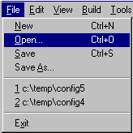

When the Configuration Tool is first invoked, no build tree is associated with the displayed data, which is in the default repository (not yet saved to disk).
The build tree is created when the data is first saved (File->Save) and header files within it are updated as you make and save changes.

Once you have several build trees saved, you may access them using the most recently used (MRU) list, which records up to four most recently accessed build trees.